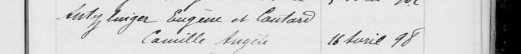

Recherche — contrôles et pistes
Complément à la monographie. Ici : ce qui a été lu, ce qui a été écarté, et ce qui reste à ouvrir en salle. Même légende de tags [F] / [S] / [H] / [ÀV].
Salis aux Ormes
Tables décennales
Dans les tables décennales des Ormes pour 1883–1892 et 1893–1902, le nom n’apparaît ni aux naissances, ni aux mariages, ni aux décès [F].
→ TD Ormes 1883–1892
→ TD Ormes 1893–1902
Sous la lettre S des naissances 1883–1892 figure Salsier Louis, 1er avril 1891 — un autre patronyme [F].
Extrait TD naissances, lettre S [F]. Source : AD86, tables 1883-1892. Prouve un Salsier ; ne prouve pas un propriétaire de la villa.
Même décennie 1893–1902, lettre S : toujours aucun [F] - extrait.

Recensement 1891
Sur les vues consultées (Place de la Halle, Grande Rue) : non repéré [F]. À la Place de la Halle : René d’Argenson, propriétaire, avec deux enfants et du personnel [F].
→ REC 1891
 Agrandir
AgrandirListe nominative 1891, « La Halle » [F]. Source : AD86. non vu sur ces vues.
Inventaire 1897 et silences
La notice de l’inventaire après décès ne mentionne pas la commune des Ormes [F] — silence de notice, pas conclusion sur le contenu des feuillets. Le dossier complet n’a pas été lu : présence éventuelle de la villa encore [H]/[ÀV].
Des publications sur et (Oberthür, latourdenaintre.fr, bilan Gallica local) ne parlent pas de la villa des Ormes [F] — absence dans ces textes seulement, pas preuve d’inexistence.
→ Académie de Touraine - Oberthür (PDF)
→ latourdenaintre.fr - Salis
Mariage 1898
Le 16 avril 1898, aux Ormes (cote 9 E 217 12 2), acte n° 2 : Antzlinger Eugène, armurier, 24 ans, né à Châtellerault, épouse Coutard Camille Angèle, couturière, 21 ans, née à Châtellerault, domiciliée aux Ormes [F]. Ce n’est pas un ; l’acte ne porte pas la villa [F].
→ AD86 — registre 1896–1899, vue 78
Ouverture de l’acte [F]. Source : vue 78.
Fin de l’acte n° 2 [F]. Source : vue 79.
La table décennale 1893-1902 confirme la date et l’épouse Coutard Camille Angèle [F]. Les lectures « Ludger Eugène » / « Auty » sur cette seule coupe ne tiennent pas devant l’acte (mauvaise segmentation d’Antzlinger) [F].

AgrandirLigne de table [F] pour la date et Coutard. Ne prouve pas « ».
Notice généalogique concordante (même acte, pas une seconde preuve) [S] - Klingenthal.
Recensements 1901 et 1906
Arks : 1901 = vta665cfe8970b9baaf ; 1906 = vtacedbf0fa3ba691b6 [F].
Sur les colonnes de noms consultées (1901 : vues 2–23 + récaps ; 1906 : vue 2 entière et vues 3–23) : aucun , ni Auty, ni , ni Antzlinger, ni Coutard [F] (négatif borné à ces vues).
Audoux et Aubéry (D’Aubery en 1906) sont d’autres familles [F]. Des habitants s’appellent Caroline ou Marie Louise : prénoms, pas titres de maison [F].
La rue Pierre-d’Argenson n’apparaît pas comme section du chef-lieu sur les tableaux lus [F]. En 1906, la récapitulation (vue 24) nomme Bourg, Rue du Pont et Quartier Halle, Rue Neuve, Route Nationale, Champ de foire [F].
REC 1891 : non repéré sur les vues consultées [F] - REC 1891.
Un aux Ormes avant ~1950 reste possible via matrices / acte de vente [ÀV].
Plans Deglane
La cote AN AJ/52/361 citée par AGORHA est un dossier d’élève (lettres, notes), pas un fonds de plans de la villa [F].
Chasse catalogue 2026-11-23 (Léonore, INHA, POP, PSS, Sitadel) : pas de plan de cette villa trouvé en ligne. Reste ouvert : permis communaux / AD en salle.
Notaire Lasserré
Georges Victor Lasserré (Châtellerault) : répertoire en ligne pour la vigne de 1890 [F] ; minutes à consulter sur place [ÀV].
Lieu-dit « les Ormes », , 1 ha 48 a 4 ca, 3 300 F [F]. Toujours la vigne, jamais la villa.
Tang Haywen / géographie
Archives Tang croisent / Caroline / Fabrice et parlent d’une « Villa Caroline » « sur les rives de la Loire » [H]/[ÀV] — tension avec Les Ormes (Vienne).
Encore ouvert (salle)
- Matrices
- Minute 1890 (4 E 46 417 / 424 selon commande)
- Inventaire 1897, feuillets complets
- Acte d’acquisition
- Permis / plans communaux
- État civil (décès 20/03/1897 déjà [F] notices)